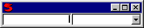

(numctrl, uomctrl, readonly = false, div = '')
where numctrl is usually a NumberControl type, and uomctrl is usually a ChooseListControl or a KeyControl type.
This control takes in two controls and lays them out in a horizontal row where numctrl is on the right and uomctrl is on the left (with div between them).
For example:
Window(#(UOM (Number mask: '#########.##')
(ChooseList #('liters', 'gallons'))))
would display
User can enter a value into the field on the left and select a unit of measure (uom) by clicking the down arrow button on the right.
The value of a UOMControl (e.g. what Get returns) is:
numctrl.Get() $ ' ' $ uomctrl.Get()